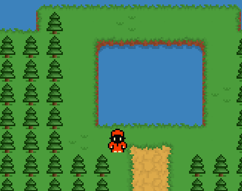

Welcome to the World of Antonio
Welcome, Antonio fans and newcomers! We’re excited to share some of the progress we’ve made in developing our game. From design concepts to new graphics and NPC interactions, this game is becoming a rich, immersive experience that we can’t wait for you to explore. Here’s a peek into what’s been happening behind the scenes:
Initial Design

Vision and Core Concept
In designing Antonio Knows, our goal was to create a game that blends a sense of adventure with a vibrant and energetic world. Every detail has been carefully crafted to make you feel like a part of this universe.
Character and World Design
- Playable Characters: We’re developing a playable character with selectable sprites and a chance to change your outfit in-game.
- World Building: We've included new tile design to make you feel more immersed in the world and create a sense of 3D nature in the 2D world.
New Graphics and Visuals

Engaging with NPCs: A World Full of Stories
NPCs (Non-Player Characters) in Antonio Knows aren’t just bystanders – they’re integral to your journey. Here’s how we're planning to integrate NPCs into the storyline of our game:
Meet the NPCs

- Dynamic Dialogue: NPCs respond to your choices, making each interaction feel meaningful. Will you help them, ignore them, or take a more strategic approach?
- Quest and Storylines: Some NPCs offer quests that reveal secrets about the world, while others provide hints, warnings, or new challenges.